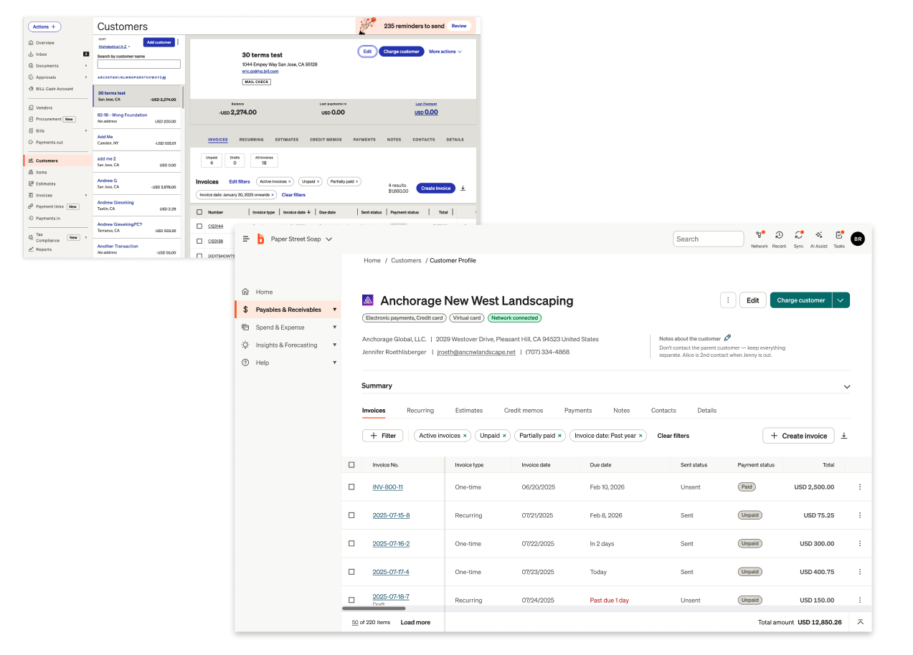
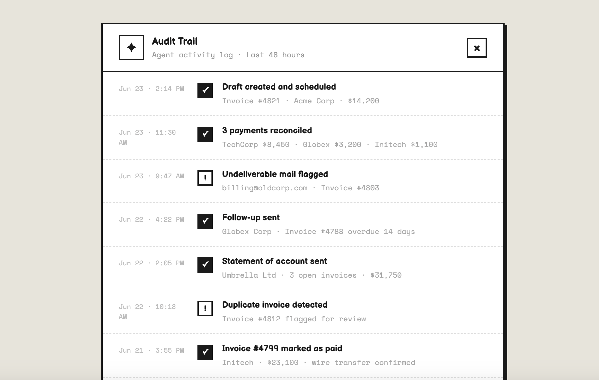
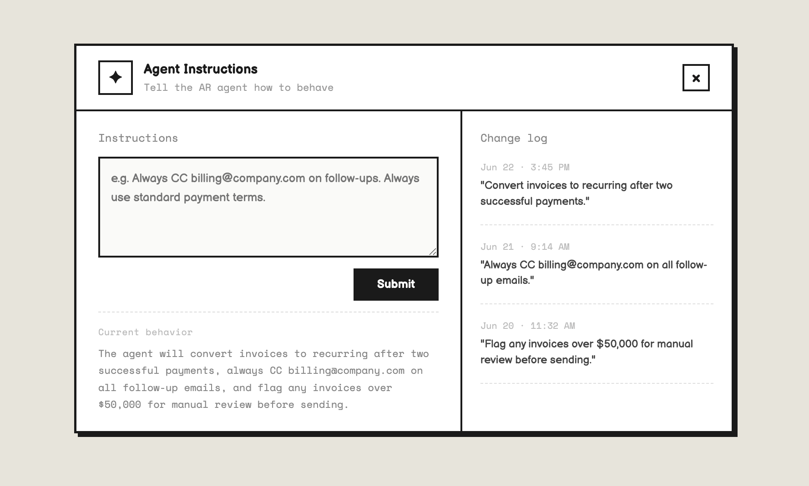

Finance teams were spending significant time on repetitive communications and follow-up tasks that shouldn't require a human.
Teams had to track and manage routine outreach using manual processes, handling correspondence individually. Each task small on its own, but collectively consuming hours that should be spent on judgment-heavy exceptions.
Earlier automation had existed, but it lacked the nuance and controls teams needed to feel confident handing off the work. So teams ended up carefully managing the process themselves anyway — the worst of both worlds.

Redesigning the role of the finance team.
The goal was to move teams from directly handling numerous manual tasks to supervising an agent that handles the majority of the workflow. That's a meaningful shift in mental model — and it required a design strategy that made the transition feel earned rather than imposed.
We called it gradual autonomy: a staged intervention model that built trust incrementally, letting teams find their comfort level before moving to fuller automation.

A new way to manage this process inside the product — built around supervision, not just control.
The new workflow introduced agentic orchestration as a first-class part of the product. Teams could see what the agent was planning, why it was planning it, and what it had already done — with enough visibility to intervene or adjust at any point.
The audit trail became the trust layer. Displaying the agent's reasoning alongside relevant context meant teams weren't just seeing outputs — they were seeing the logic, which is what made the outputs feel safe to act on.

I expected users to be hesitant about autonomous mode. Instead, clear visibility into what the agent would do — paired with transparent reasoning — meaningfully increased their openness to starting there.
The assumption going in was that finance teams would want to start slow — approvals only, manual review, conservative defaults. Research told a different story. When users could see exactly what the agent was about to do and understand why, the fear of automation dropped significantly.
What users actually wanted wasn't less autonomy — it was legible autonomy. The ability to understand and adjust agent behavior over time mattered more than starting with a restricted feature set. Transparency wasn't just a nice-to-have; it was the thing that made adoption possible.
"It's not that I don't trust it — I just need to know it understands the exceptions."
This shaped the core design principle for the product: show your work. Every agent action needed a visible rationale. Not buried in a log, but surfaced contextually at the point where trust was being asked for.